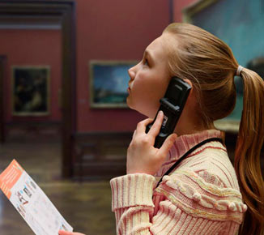
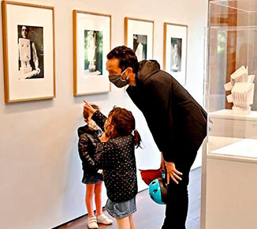
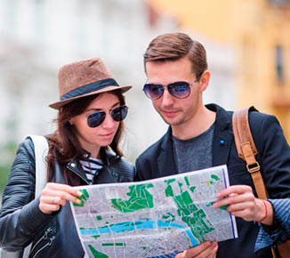
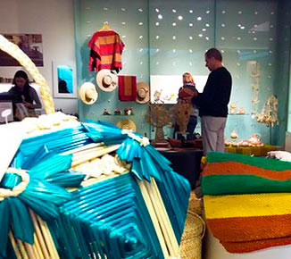
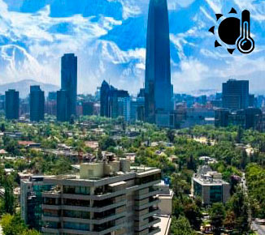
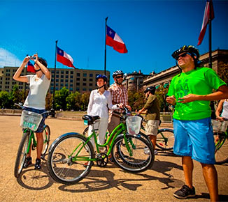

Información
Con el propósito de resguardar el importante patrimonio que contiene el Palacio y mantenerlo en la memoria de todas y todos y que siga sirviendo de referencia histórica para las futuras generaciones, agradecemos que lea la siguiente información, le indicará los procedimientos para el ingreso, así como los términos y condiciones de las visitas y los recorridos guiados.
-
Horarios y tarifas
- Martes a viernes ininterrumpidamente de 10:00 a 20:00 horas.
- Sábados, domingos y feriados de 10:00 a 17:00 horas.
- Entrada: Gratis.
- Cerrado los lunes, incluidos los días festivos (1 de mayo, 25 de diciembre y 1 de enero)
- Imprescindible presentar documento de identificación (DNI o pasaporte) para poder acceder.
- Accesos adaptados para discapacitados.
- Audioguías individuales (con programas para sordos en lenguaje de signos) a través de smartphones. Recomendable traer auriculares.
 -
Normas para la visita
Para hacer la visita más segura el aforo se encuentra limitado y controlado.
- Uso obligatorio de barbijo durante toda la visita.
- Se facilita gel desinfectante de manos a los visitantes.
- Se ruega mantener la distancia interpersonal de 2 metros.
- Servicio de Audioguía disponible a través de nuestra red WiFi y accesible desde el móvil del visitante. Le recomendamos que traiga sus propios auriculares.
- No se podrá acceder a folletos físicos habituales. Esta información estará accesible en el dispositivo del visitante a través de la red WiFi.
- Se debe evitar el contacto con el personal del Museo, así como tocar las vitrinas y expositores.
 -
Cómo llegar
A Santiago se accede por vía aérea al Aeropuerto Arturo Merino Benitez. También vía terrestre por Panamericana vía 5 Norte y desde Valparaíso por Cuesta La Dormida. Al atractivo se accede a través de las calles Moneda, Teatinos y Morandé o del Metro Estación Moneda.
El acceso para vehículos a los estacionamientos privados SABA, está ubicado por calle Teatinos.
Las siguientes líneas de transporte tienen rutas que pasan cerca:
- Micro: 106, 201, 201E, 210, 405, I09
- Metro: L1, L2, L3
 -
Tiendas
Te invitamos a conocer las diversas tiendas y espacios que te esperan con una gran cantidad de productos. Un lugar donde se han reunido los vestigios de cada cultura, de cada exposición. Catálogos de exposiciones, libros, obras de arte, textiles, música, películas, joyería, postales, souveniers y más.
Aprovecha los descuentos de tu tarjeta del "Centro de Amigos"
- Tienda Centro Cultural La Moneda.
- Fundación Artesanías de Chile.
- Orfebrería La Dorada.
- Chocolatería Entrelagos.
- Librería La Moneda.
- Boutique Raíces.
 -
Clima
Santiago de Chile se encuentra ubicado a los pies de los Andes, un poco más de 500 metros sobre nivel del mar y está rodeado por picos de más de 6000 metros de altura, el clima de la ciudad es un poco similar al del mediterráneo. Presenta estación seca y precipitaciones en el invierno. La temperatura media es de 14° C al año y las precipitaciones suman una media anual de 356.2 mm que desaparecen desde la costa hasta la depresión intermedia.
La puntuación de turismo favorece los días despejados y sin lluvia con temperaturas percibidas entre 18 ° C y 27° C. En base a esta puntuación, la mejor época del año para visitar Santiago de Chile para las actividades turísticas generales a la intemperie es desde finales de noviembre hasta mediados de marzo, con una puntuación máxima en la segunda semana de enero.
 -
Alrededores
Cerca usted encontrará los siguientes lugares:
Barrio Italia-Condell, Barrio Balmaceda, Barrio Bellavista, Barrio Brasil, Barrio Suecia, Barrio Concha y Toro, Barrio Lastarria, Barrio Paris-Londres, Barrio Patronato, Barrio República, Barrio Yungay, Caleu, Canteros de Colina, Centro de Esquí El Colorado, Centro de Esquí La Parva, Centro de Esquí Valle Nevado, Cerro Santa Lucía, El Arrayán, Lugar Histórico Campo de Batalla de Maipú, Observatorio Cerro Calán, Parque Metropolitano, Parque Forestal, Parque y Laguna Carén, Pueblito Los Domínicos, Río Mapocho, Viña Cousiño Macul, Parque Inés de Suárez, Centro Gabriela Mistral, La Chascona, Mercado Central de Santiago, Parque de los Reyes, Parque Almagro, Parque Bicentenario de la Infancia, Museo Parque de las Esculturas.
